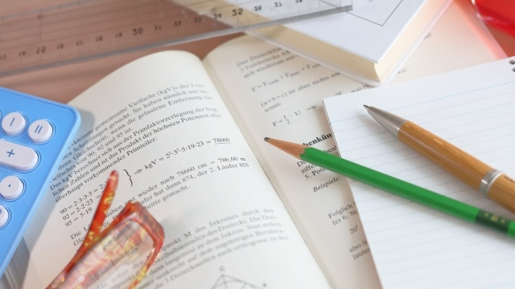

暇をあかしてネットを徘徊していると、ふと「BOOKOFFが業績悪化」というニュースが目につきました。大学の時にはかなりマイナーなテーマを専攻していたため参考資料がほぼ絶版、論文を書くためには古本屋通いが必須だった身としては、古本屋の盛衰はある種ノスタルジーを誘われるニュースです。
私が通っていた古本屋は神田の古本街にあり、人文系の専門書ばかりを扱うところだったので、古本というととにかく「高い！」という印象があります。装丁ボロボロ、本文には書き込みバリバリにも関わらず、定価の2倍は当たり前。「足下を見やがって！」と奥歯をかみしめながら、雀の涙のアルバイト代をはたいて買った本は、新装再版が出ても捨てることができません。
そんなお高い古本屋ばかり行かざるを得なかったわたしにとって、BOOKOFFはとてもほっとする、いわばオアシスでした。じっくり書棚をサーチしてみると、大量の漫画本やゲームの攻略本、大衆小説に混じって、ぎょっとするような掘り出し物があったりします。特にハードカバーの絶版海外文学がワンコインで売っていたりすると、もう天にも昇る気持ちです。新書系もクオリティの高いものが叩き売り状態で、あれもこれもと欲しい本をごっそり買っていました。
このようなお得感満載の値付けは旧来の古本屋のように内容と希少性によるのではなく、よりシステマティックに形式と新しさだけで値付けをしていたところから生まれたものだそうです。結果として、人類の英知の結晶ともいえるような本が缶ジュース一本と同じ金額で買える状態になります。
これって冷静に考えてみればすごいことですよね。時代を500年ほどさかのぼれば、BOOKOFFで100円で叩き売られている一冊の本、そこに書かれた知識はとんでもないお宝です。大学入試の世界史では「印刷の歴史」がよく出題されますが、それもそのはず。安価な大量印刷が可能になり、これまた安価な物流システムが構築されて初めて、知識が一般の人々の手元に届くようになりました。そして、それが人々の識字率の向上と合わさったとき、知識の爆発が起こりました。この土台なくして我々の生きる現代社会は存在しません。言葉を換えれば、BOOKOFFで叩き売りされる100円の本は、現代という時代の象徴なのかもしれません。
本来超稀少なはずのものが時を経て大量に生産され陳腐化する現象は、本だけではなく教育にも当てはまるような気がします。過去のブログにも書いたように、近代になるまで教育は非常に贅沢な最上級の稀少品でした。しかし、今や人々は当たり前のように教育を受け、当たり前になりすぎて不感症になっています。
毎年この時期は、高3受験生の焦りが第一のピークを迎えます。多くの生徒が、成績がなかなか思うように上がらない状況に業を煮やし、とにかく手軽に「覚える勉強」に走るのです。そうなると、知識はただの「記号」に堕してしまい、すべてが似たようなものに見えてきます。私が担当する世界史などその最たるもの。人名や事件名をとりあえず覚えたはいいけれど、その内容も歴史的意義もよくわからない。生徒達の身の回りには「10日完成 これで世界史は完璧！」といった知識量促成本がいくらでも転がっています。それらの本の中に転がっている知識は、さながらBOOKOFFに並ぶ「100円の人類の英知」です。
しかし、ここで焦りをぐっと押さえて勉強の見方を変えてみると、また違った世界が見えてきます。教科書にさらりと書かれた「Aが起こった結果、B国ではCが頻発し、Dという事件が起こった」という一文は、実は人類の英知の結晶です。Aが起こった“結果”Cが起こったという因果関係一つとっても、何十人何百人の歴史学者が資料・証言をひたすら集めた末にたどり着いた定説ですし、Cの結果Dが起こったという因果も同じです。そこに気づくと、こう考えることができます。「昔の学者はどういう根拠でA→Cと結論づけたんだろう」と。そして、この疑問を解決するためにちょっと調べてみるのです。一見非効率的で無意味に見えるかもしれませんが、こうやって疑問を持ち、調べ、納得した知識はもはや記号ではありません。覚えようとことさら意識しなくても、気がつけば自然と覚えていますし、ほかの似た言葉と混同することもまずないでしょう。さらに、調べていく過程で新たな知識や考え方に出会い、これまで覚えた知識とも有機的につながっていきます。
この時期私は担当する生徒に上述の例とともに「勉強“自体”を見直せ」といいます。特に国立の難関校を受ける生徒にとって、この考え方はいわゆる精神論ではなく、かなり実践的で具体的なアドバイスだと私は信じています。それもそのはず、大学入試も高度になればなるほど「教科自体が成立する背景、考え方」を生徒が理解しているかを問うような問題が多くなるのですから、そこを置き去りにした知識暗記は目的にそぐいません。
現在模試その他で成績が伸び悩んでいる生徒の皆さんは、いまこそ勇気を持って「勉強そのもの」を見つめ直してほしいと思います。皆さんが取り組んでいるテキストに書かれた一文一文は「100円で叩き売りされるつまらない本」ではなく、まさに「英知の結晶」なのだと気づければ、成績は必ず上向いてきます！